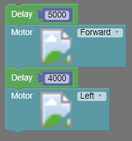

Esta primeira oficina tem um caráter mais introdutório. Pode-se aproveitá-la para apresentar aos alunos o curso elaborado e
seus objetivos. É importante também que os alunos estejam cientes do que estão fazendo e o que se espera do aluno ao
final desse conjunto de oficinas.
Enquanto o objetivo geral é melhorar o desempenho dos alunos na escola como um todo, os objetivos especificos são:
Ter um primeiro contato com esta área de programação e robótica;
Desenvolver o pensamento computacional;
Reforçar, por meio da aplicação, o aprendizado de certos conteúdos da física.
Ao final das oficinas, espera-se que os alunos consigam resolver simples problemas de locomoção do robô,
utilizando para tanto conceitos da programação como condicionais e repetições.
Uma vez apresentado o curso e suas oficinas, pode-se de fato começar com a aula. Nesta primeira oficina, apresenta-se o conceito do que é um robô. E um robô, nada mais é do que um componente eletrônico que consegue tomar uma decisão levando em consideração o ambiente no qual ele está inserido. Em outras palavras, um robô é uma máquina que ao interagir com o meio, enviando e recebendo informações, executa determinada tarefa. De certa maneira, um robô é uma máquina que consegue ‘pensar’. E é justamente esse saber ‘pensar’ do robô que será explorado, procurando entender como robôs realizam certas tarefas e ensinando estes últimos a ‘pensarem’. Para não tornar uma aula apenas expositiva, pergunte aos alunos exemplos de robô. Isso permitirá verificar se eles entenderam o conceito de um robô, além de possibilitar uma discussão quando um exemplo não for válido.
Por fim, mostre o robô que será utilizado, fale de tudo o que ele é capaz de fazer e peça que os alunos elaborem uma tarefa para que você faça o robô realizar. Isto é, eles definirão uma série de tarefas que o robô terá que executar, e você criará o código e mostrará o robô em ação na próxima oficina. A ideia desta atividade é, como a maioria das atividades propostas, engajar o aluno instigando a curiosidade e a criatividade.
Tempo estimado para esta oficina: 40 minutos
Nesta segunda oficina, aborda-se o conceito de algoritmos para que os alunos comecem a entender como que se programa um robô. Ao invés de simplesmente apresentar a definição deste conceito, pode-se começar apresentando um passo a passo para realizar determinada tarefa, que pode ser desde como arremessar uma bola de basquete até uma receita de bolo por exemplo. Uma vez apresentado algum passo a passo, pode-se introduzir o conceito de algoritmo aos alunos, dizendo que programar um robô é como escrever a receita de um bolo. Ou seja, para que um robô realize determinada tarefa, é preciso elaborar um passo a passo com as instruções que o robô precisa executar. Este conjunto de instruções é o que se pode chamar de algoritmo.
Em seguida, peça aos alunos que elaborem, individualmente, algumas instruções para realizar uma determinada atividade que dê para se fazer na sala de aula, como por exemplo um desenho ou um passo de dança. Selecione então alguns voluntários e leia algumas instruções para que estes a executem. Ao final, pergunte ao autor da instrução se aquele era o resultado esperado. A ideia desta dinâmica é fazer com que os alunos entendam que as instruções têm que ser precisas e completas, tudo isso em uma linguagem compreensível. Assim, finaliza-se o conceito de algoritmo acrescentando que o conjunto de instruções deve ser elaborado em uma linguagem que o robô entenda, que neste caso, será utilizados blocos de comando.
Por fim, é importante frisar que os algoritmos que serão elaborados para o robô ficam executando para sempre, em um loop. Em outras palavras, o robô executará as instruções descritas no passo a passo e quando chegar ao final, isto é, executar o último comando, recomeçará o passo a passo desde a primeira instrução.
Caso o professor queira aprofundar um pouco mais o conteúdo desta oficina, pode-se utilizar a ideia de fluxogramas. Vale ressaltar que mais adiante, quando se estiver abordando o conceito de condicionais, o conceito de algoritmo será abordado novamente e incrementado.
Tempo estimado para esta oficina: 90 minutos
Esta é a primeira oficina de cunho mais prático, onde os alunos vão, de fato, mexer, programar e analisar se o robô reagiu conforme o esperado com os comandos passados. Em geral, e principalmente nos primeiros códigos, o robô não reage conforme o desejado, estes erros são uma excelente forma de gerar uma discussão entre os alunos para promover uma nova solução. A ideia desta oficina então, é que o professor apresente os blocos de comando que controlam a movimentação do robô, e em seguida deixe com que os alunos proponham códigos e até mesmo desafios. Assim, o professor passa a desempenhar um papel de facilitador, enquanto os alunos tomam uma posição mais ativa no aprendizado.
O bloco "motor"(mostrado na imagem a seguir) é o bloco reponsável pela movimentação de 2 motores que estarão com rodas encaixadas em seus eixos. Este bloco admite 5 valores diferentes, sendo eles "forward"(para frente, em inglês), "backward"(para trás, em inglês), "right"(direita, em inglês), "left"(esquerda, em inglês) e "stop"(parar, em inglês).
Este bloco fará com que o robô ande para frente até que outro valor seja definido para ele. Para fazer com que o robô vire à esquerda, utiliza-se este mesmo bloco “Motor” com o parâmetro “Left”, e para a direita “Right”. Vale ressaltar que estes comandos de virar à direita e esquerda apenas rotacionam o robô. Existe ainda o parâmetro “Backward” para se locomover para trás e “Stop” que para o robô.
Caso o professor esteja usando o Sparki, a lógica dos blocos de comando é a mesma, só que neste caso, passa-se o parâmetro de quantos centímetros se desejar andar (ou quantos graus para rotacionar o robô), conforme a figura abaixo.
Lembra que o código passado ao robô, representado por estes blocos de comando, está em um loop? Isto é, após executar o último bloco o robô volta para o primeiro bloco. Um único bloco “Motor(Forward)”, faz com que o robô se mova para frente eternamente. De certa maneira, já se está estudando sobre estrutura de repetição, um tema que será abordado posteriormente. E mais, para evitar que o nosso robô não ande eternamente para frente, não bastar colocar um novo bloco abaixo com uma direção diferente, pois o código todo é executado em questões de milisegundos, provavelmente nem notaríamos a mudança de direção, nosso robô pareceria estar enguiçado. Para evitar isso utiliza-se o bloco “Delay” passando um tempo em milissegundos como o parâmetro, essa função faz com que tenha uma pausa até que o próximo bloco seja executado. Desta maneira, controlamos o tempo em que o robô irá andar(ou rotacionar). Por exemplo, para fazer com que o robô faça a trajetória de um quadrado, pode-se utilizar os seguintes blocos de comando:

Por fim, faça com que os alunos treinem e elaborem diversos percursos para o robô. Por exemplo, pode-se tentar fazer com que o robô faça outras formas geométricas, ou até mesmo elaborar uma pista para que ele dê uma volta.
Tempo estimado para esta oficina: 40 minutos
Nesta oficina, aborda-se o conceito de variáveis. Este conceito é um pouco abstrato demais para os alunos, que normalmente apresentam dificuldades para entender corretamente o que são variáveis e suas aplicações. Assim, pede-se que o professor explique várias vezes este conceito, fazendo diversas analogias para que os alunos associem adequadamente. Formalmente, variável é um espaço na memória que armazena determinado valor. No entanto, não se utilizará tal definição. É preferível que se defina uma variável como sendo uma ‘caixinha’ (pode-se usar uma mochila, uma gaveta, etc...) onde se guarda uma informação que se pode acessar ou atualizar depois. Esta ‘caixinha’ deve possuir um nome único, e assim, através deste nome, pode-se chamar esta variável e trazer o valor que ela representa. Variáveis são muito uteis para guardar valores proveniente da leitura de um sensor (como no caso do sensor ultrassônico que será abordado posteriormente em uma oficina), para utilizar como parâmetro de um bloco de comando (por exemplo, no bloco “Delay” visto na última oficina, pode-se passar uma variável como parâmetro do comando), ou para criar regras e estruturas para o algoritmo (como será visto na próxima oficina, que aborda a estrutura de condicionais).
Para criar uma variável, utiliza-se o bloco “set”, passando como parâmetro o nome que se desejar dar para esta variável, conforme pode ser visto na figura abaixo, onde o nome dado foi ‘variavel’. Perceba que este bloco contem um encaixe na lateral, que é onde se atribuirá um valor para esta variável.
Assim, tem-se no exemplo abaixo um código que cria uma variável chamada “variavel” que armazena o valor 1000. Em seguida, pede-se que o robô ande pelo tempo determinado pela variável, isto é, 1000 milissegundos (1 segundo).
Mais exemplos e casos serão abordados posteriormente, em outras oficinas. Mas caso o professor possua uma tela de LCD em seu robô, pode-se explorar mais as variáveis e seus valores imprimindo-os na tela.
Tempo estimado para esta oficina: 45 minutos
Nesta quinta oficina, aborda-se o tema de condicionais, uma estrutura importante e muito utilizada na elaboração de algoritmos. Para tanto, pede-se inicialmente que o professor volte lá para a oficina sobre algoritmos, mais especificamente para o exemplo do passo a passo apresentado pelo professor. Caso o passo a passo tenha sido de uma receita por exemplo, pergunte aos alunos o que aconteceria se algum ingrediente faltando (adaptar esse problema para o passo a passo apresentado). Bom neste caso, poder-se-ia incluir um novo passo que seria ir ao supermercado comprar os ingredientes faltantes, mas apenas para quem não tiver todos os ingredientes. Uma vez feita essa contextualização e motivação para os alunos, pode-se definir e apresentar o conceito de condição.
Uma condição, é uma pergunta que possui apenas 2 respostas possíveis, sim ou não. Incluindo uma condição entre os blocos de comando, preparamos o robô para enfrentar adversidades. Em outras palavras, pode-se fazer uma pergunta ao robô, e passar instruções diferentes de acordo com a resposta. Esta, é a primeira técnica de fato que onde 'ensina-se' o robô a pensar, pois o robô acaba tomando uma decisão (pelo menos para quem está apenas observando o comportamento do robô).
A lógica do bloco de comando da condição é de verificar uma condição, comparando dois valores. E se esta condição for verdadeira, então realiza-se determinado comando. De fato, pode-se ver pela figura abaixo que a estrutura deste bloco de comando é um pouco diferente, possuindo 2 encaixes laterais. O primeiro encaixe, do 'if' é onde se define a condição sob a forma de uma pergunta/comparação. Já o segundo encaixe (‘do’), insere-se os blocos de comando que o robô deverá executar caso as condições definidas anteriormente sejam verdadeiras.
Para verificar se os alunos entenderam este conceito e sua utilidade, pergunte onde e para que tipo de tarefa seria interessante incorporar essa estrutura nos comandos do robô.
Tempo estimado para esta oficina: 120 minutos
Finalmente, chegou-se a ultima oficina proposta, onde apresenta-se o bloco de comando “Ultrassom” que permite calcular distâncias. Com esta funcionalidade será possível aplicar todos os blocos de comando vistos anteriormente, assim como os conceitos. Mas antes de começar a parte prática e apresentar este novo bloco de comando, pode-se aproveitar este momento para abordar o tema de ondas, e assim revisar este conteúdo de física. Vale relembrar que um dos objetivos deste projeto é de melhorar o aprendizado de física dos alunos por meio da aplicação prática de um determinado conteúdo. Espera-se assim que o professor relembre o conteúdo desta matéria conforme fora ensinado aos alunos. Aborda-se aqui rapidamente alguns conceitos, para em seguida explicar como calcula-se distâncias por meio da emissão e recepção de ondas.
Uma onda é uma forma de transportar energia mais uma quantidade de movimento, que possui alguns elementos, como: velocidade, período, frequência e comprimento de onda. Um exemplo de onda é o som, que é uma onda longitudinal, isto é, na qual a direção da vibração é paralela à direção de propagação da onda. Quando a frequência de uma onda sonora é maior do que os 20 mil Hz (limite superior da audição humana), chama-se esta onda de ultrassom.
O componente Sensor Ultrassônico (da figura abaixo) funciona como os "olhos" do robô, possuindo um alto-falante que emite uma onda sonora de alta frequência e um alto-falante que capta ondas sonoras.
Assim, é possível emitir ondas, que serão parcialmente refletidas de volta para o robô ao esbarrar com um objeto, conforme o esquema representado na figura abaixo. O robô é então capaz de medir o tempo que levou para a onda ir e voltar até ele, e como a velocidade da onda emitida pelo robô é constante, pode-se calcular a distância entre o robô e o objeto a frente dele.
Para fazer toda essa operação, e encontrar a distância que separa o robô do objeto a frente dele, utiliza-se o bloco de comando “Ultrassônico”, representado pela figura abaixo. Este bloco de comando traz então um valor que corresponde a esta distância em centímetros, que pode ser armazenado em uma variável. Neste momento, antes de entrar em exemplos práticos e para verificar se os alunos estão entendendo esta nova ferramenta, pode-se perguntar aos alunos como e em que situação se aplicaria esta nova funcionalidade.
Com este bloco de comando, pode-se programar o robô para parar de se movimentar caso encontre algum obstáculo ou contorna-lo. O código abaixo faz com que o robô ande até encontrar algum objeto a frente dele. Discuta bem a estrutura deste código com os alunos, e o seu funcionamento. Seguindo o passo a passo, tem-se que primeiro o robô calcula a distância entre ele e o objeto a frente dele e a armazena em uma variável chamada “dist”. Em seguida, por meio de uma condicional, verifica-se se a distância obtida é maior do que 10 centímetros. Caso a distância seja maior do que os 10 centímetros, o robô avança para frente por 5 segundos. Com isto, encerra-se a primeira iteração (lembra que o código recomeça?) e calcula-se novamente a distância, recomeçando o processo descrito anteriormente. Desta maneira, a sequência de comandos abaixo faz com que o robô ande até encontrar um obstáculo a menos de 10 centímetros, quando não se movimentará mais.
Por fim, como desafio final para os alunos resolverem conjuntamente, monte um labirinto simples para o robô atravessar. A ideia é que os alunos usem os blocos de comando apresentados e treinem os conceitos de condicionais e repetição.